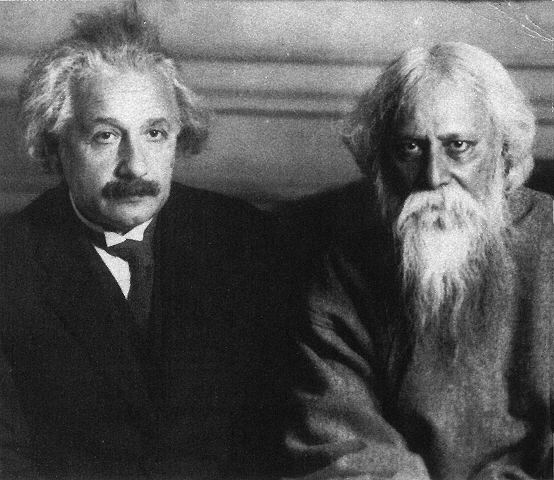
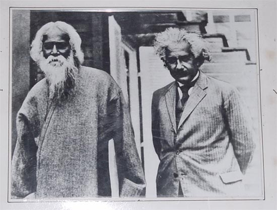

|
Rabindranath Tagore : In
Conversation with Albert Einstein
Collected by Avijit Roy
E-mail:
charbak_bd@yahoo.com
Republished on
July 27, 2009
[Excepted from - "Einstein and Tagore Plumb the
truth : Scientist and Poet Exchange Thoughts on the possibility of its Existence
without relation to Humanity" by Dmitri Marianoff, published in NewYork Times,
August 10, 1930]
JULY 14, 1930 ON THE NATURE OF REALITY
Near Potsdam is a small place called
Caputh. There, upon a hill, stands a brown wooden house with a red tile roof.
Round about, like sentinels, stand the slim trunks of pine trees. In the wooden
villa dwells the mathematician, Albert Einstein.
At about 4 o'clock one recent
afternoon Rabindranath Tagore walked along the sandy path to the house. he
wore a suit of soft, blue cloth; he leaned a bit forward as he walked and
one hand was bent behind his back. Beside him stood sturdy, erect Einstein
...
TAGORE: You have been busy, hunting down with mathematics, the two
ancient entities, time and space, while I have been lecturing in this country on
the eternal world of man, the universe of reality.
EINSTEIN: Do you believe in the divine isolated from the world?
TAGORE: Not isolated. The infinite personality of man comprehends the
universe. There cannot be anything that cannot be subsumed by the human
personality, and this proves that the truth of the universe is human truth.
EINSTEIN: There are two different conceptions about the nature of the
universe - the world as a unity dependent on humanity, and the world as reality
independent of the human factor.
TAGORE: When our universe is in harmony with man, the eternal, we know
it as truth, we feel it as beauty.
EINSTEIN: This is a purely human conception of the universe.
TAGORE: ThE world is a human world - the scientific view of it is
also that of the scientific man. Therefore, the world apart from us does not
exist; it is a relative world, depending for its reality upon our consciousness.
There is some standard of reason and enjoyment which gives it truth, the
standard of the eternal man whose experiences are made possible through our
experiences.
EINSTEIN: This is a realization of the human entity.
TAGORE: Yes, one eternal entity. We have to realize it through our
emotions and activities. We realize the supreme man, who has no individuaL
limitations, through our limitations.
Science is concerned with that which is not confined to individuals; it is
the impersonal human world of truths. Religion realizes these truths and links
them up with our deeper needs. Our individual consciousness of truth gains
universal significance. Religion applies values to truth, and we know truth as
good through own harmony with it. EINSTEIN Truth, then, or beauty, is not
independent of man?
TAGORE: No, I do not say so.
EINSTEIN: If there were no human beings any more, the Apollo
Belvedere no longer would be beautiful?
TAGORE: No!
EINSTEIN: I agree with this conception of beauty, but not with regard
to truth.
TAGORE Why not? Truth is realized through men.
EINSTEIN I cannot prove my conception is right, but that is my
religion.
TAGORE Beauty is in the ideal of perfect harmony, which is in the
universal being; truth is the perfect comprehension of the universal mind. We
individuals approach it through our own mistakes and blunders, through our
accumulated experience, through our illumined consciousness. How otherwise can
we know truth?
EINSTEIN: I cannot prove, but I believe in the Pythagorean argument,
that the truth is independent of human beings. It is the problem of the logic of
continuity.
TAGORE : Truth, which is one with the universal being, must be
essentially human; otherwise, whatever we individuals realize as true, never can
be called truth. At least, the truth which is described as scientific and which
only can be reached through the process of logic - —in other words, by an organ
of thought which is human. According to the Indian philosophy there is Brahman,
the absolute truth, which cannot be conceived by the isolation of the individual
mind or described by words, but can be realized only by merging the individual
in its infinity. But such a truth cannot belong to science. The nature of truth
which we are discussing is an appearance; that is to say, what appears to be
true to the human mind, and therefore is human, and may be called maya, or
illusion.
EINSTEIN It is no illusion of the individual, but of the species.
TAGORE: The species also belongs to a unity, to humanity. Therefore
the entire human mind realizes truth; the Indian and the European mind meet in a
common realization.
***
EINSTEIN: The word species is used in German for all human beings; as
a matter of fact, even the apes and the frogs would belong to it. The problem is
whether truth is independent of our consciousness.
TAGORE: What we call truth lies in the rational harmony between the
subjective and objective aspects of reality, both of which belong to the
superpersonal man.
EINSTEIN: We do things with our mind, even in our everyday life, for
which we are not responsible. The mind acknowledges realities outside of it,
independent of it. For instance, nobody may be in this house, yet that table
remains where it is.
TAGORE: Yes, it remains outside the individual mind, but not the
universal mind. The table is that which is perceptible by some kind of
consciousness we possess.
EINSTEIN: If nobody were in the house the table would exist all the
same, but this is already illegitimate from your point of view, because we
cannot explain what it means, that the table is there, independently of us. Our
natural point of view in regard to the existence of truth apart from humanity
cannot be explained or proved, but it is a belief which nobody can lack - —not
even primitive beings. We attribute to truth a superhuman objectivity. It is
indispensable for us - —this reality which is independent of our existence and
our experience and our mind - though we cannot say what it means.
TAGORE: In any case, if there be any truth absolutely unrelated to
humanity, then for us it is absolutely non-existing.
EINSTEIN: Then I am more religious than you are!
TAGORE: My religion is in the reconciliation of the superpersonal man,
the universal spirit, in my own individual being.

AUGUST 19, 1930 ON
MODERN PHYSICS, MUSIC ETC.
Excerpted from "Three conversations: Tagore Talks
with Einstein, with Rolland, and Wells" (ASIA 3/1931, p.139-143,196 f.)
TAGORE: I was discussing with Dr. Mendel today the new mathematical
discoveries which tell us that in the realm of infinitesimal atoms chance has
its play; the drama of existence is not absolutely predestined in character.
EINSTEIN: The facts that make science tend toward this view do not say
good-bye to causality.
TAGORE: Maybe not, yet it appears that the idea of causality is not in
the elements, but that some other force builds up with them an organized
universe.
EINSTEIN: One tries to understand in the higher plane how the order is.
The order is there, where the big elements combine and guide existence, but in
the minute elements this order is not perceptible.
TAGORE: Thus duality is in the depths of existence, the contradiction of
free impulse and the directive will which works upon it and evolves an orderly
scheme of things.
EINSTEIN: Modern physics would not say they are contradictory. Clouds
look as one from a distance, but if you see them nearby, they show themselves as
disorderly drops of water.
TAGORE: I find a parallel in human psychology. Our passions and desires
are unruly, but our character subdues these elements into a harmonious whole.
Does something similar to this happen in the physical world? Are the elements
rebellious, dynamic with individual impulse? And is there a principle in the
physical world which dominates them and puts them into an orderly organization?
EINSTEIN: Even the elements are not without statistical order; elements
of radium will always maintain their specific order, now and ever onward, just
as they have done all along. There is, then, a statistical order in the
elements.
TAGORE: Otherwise, the drama of existence would be too desultory. It is
the constant harmony of chance and determination which makes it eternally new
and living.
EINSTEIN: I believe that whatever we do or live for has its causality; it
is good, however, that we cannot see through to it.
TAGORE: There is in human affairs an element of elasticity also, some
freedom within a small range which is for the expression of our personality. It
is like the musical
system in India, which is not so rigidly fixed as western music. Our
composers give a certain definite outline, a system of melody and rhythmic
arrangement, and within a certain limit the player can improvise upon it. He
must be one with the law of that particular melody, and then he can give
spontaneous expression to his musical feeling within the prescribed regulation.
We praise the composer for his genius in creating a foundation along with a
superstructure of melodies, but we expect from the player his own skill in the
creation of variations of melodic flourish and ornamentation. In creation we
follow the central law of existence, but if we do not cut ourselves adrift from
it, we can have sufficient freedom within the limits of our personality for the
fullest self-expression.

Pic: Tagore and Einstien : A
memorable moment. (Courtesy : Ms. Sabina Chowdhury)
EINSTEIN: That is possible only when there is a strong artistic tradition
in music to guide the people's mind. In Europe, music has come too far away from
popular art and popular feeling and has become something like a secret art with
conventions and traditions of its own.
TAGORE: You have to be absolutely obedient to this too complicated music.
In India, the measure of a singer's freedom is in his own creative personality.
He can sing the composer's song as his own, if he has the power creatively to
assert himself in his interpretation of the general law of the melody which he
is given to interpret.
EINSTEIN: It requires a very high standard of art to realize fully the
great idea in the original music, so that one can make variations upon it. In
our country, the variations are often prescribed.
TAGORE: If in our conduct we can follow the law of goodness, we can have
real liberty of self-expression. The principle of conduct is there, but the
character which makes it true and individual is our own creation. In our music
there is a duality of freedom and prescribed order.
EINSTEIN: Are the words of a song also free? I mean to say, is the singer
at liberty to add his own words to the song which he is singing?
TAGORE: Yes. In
Bengal we have a kind of song-kirtan, we call it-which gives freedom
to the singer to introduce parenthetical comments, phrases not in the original
song. This occasions great enthusiasm, since the audience is constantly thrilled
by some beautiful, spontaneous sentiment added by the singer.
EINSTEIN: Is the metrical form quite severe?
TAGORE: Yes, quite. You cannot exceed the limits of versification; the
singer in all his variations must keep the rhythm and the time, which is fixed.
In European music you have a comparative liberty with time, but not with melody.
EINSTEIN: Can the Indian music be sung without words? Can one understand
a song without words?
TAGORE: Yes, we have songs with unmeaning words, sounds which just help
to act as carriers of the notes. In North India, music is an independent art,
not the interpretation of words and thoughts, as in Bengal. The music is very
intricate and subtle and is a complete world of melody by itself.
EINSTEIN: Is it not polyphonic?
TAGORE: Instruments are used, not for harmony, but for keeping time and
adding to the volume and depth. Has melody suffered in your music by the
imposition of harmony?
EINSTEIN: Sometimes it does suffer very much. Sometimes the harmony
swallows up the melody altogether.
TAGORE: Melody and harmony are like lines and colors in pictures. A
simple linear picture may be completely beautiful; the introduction of color may
make it vague and insignificant. Yet color may, by combination with lines,
create great pictures, so long as it does not smother and destroy their value.
EINSTEIN: It is a beautiful comparison; line is also much older than
color. It seems that your melody is much richer in structure than ours. Japanese
music also seems to be so.
TAGORE: It is difficult to analyze the effect of eastern and western
music on our minds. I am deeply moved by the western music; I feel that it is
great, that it is vast in its structure and grand in its composition. Our own
music touches me more deeply by its fundamental lyrical appeal. European music
is epic in character; it has a broad background and is Gothic in its structure.
EINSTEIN: This is a question we Europeans cannot properly answer, we are
so used to our own music. We want to know whether our own music is a
conventional or a fundamental human feeling, whether to feel consonance and
dissonance is natural, or a convention which we accept.
TAGORE: Somehow the piano confounds me. The violin pleases me much more.
EINSTEIN: It would be interesting to study the effects of European music
on an Indian who had never heard it when he was young.
TAGORE: Once I asked an English musician to analyze for me some classical
music, and explain to me what elements make for the beauty of the piece.
EINSTEIN: The difficulty is that the really good music, whether of the
East or of the West, cannot be analyzed.
TAGORE: Yes, and what deeply affects the hearer is beyond himself.
EINSTEIN: The same uncertainty will always be there about everything
fundamental in our experience, in our reaction to art, whether in Europe or in
Asia. Even the red flower I see before me on your table may not be the same to
you and me.
TAGORE: And yet there is always going on the process of reconciliation
between them, the individual taste conforming to the universal standard.
2. Ilya
Prigogine's (Noble Laureate Chemist, 1977)
comment:
The question of meaning of reality was the central
subject of a fascinating dialog between Einstein and Tagore. Einstein
emphasized that the science had to be independent of the existence of any
observer. This led him to deny the reality of time as irreversibility, as
evolution. On the contrary Tagore maintained that even if absolute
truth could exist, it would be inaccessible to the human mind. Curiously
enough, the present evolution of science is running in the direction stated
by great poet.
3. RUSSELL'S
COMMENT ON TAGORE'S MYSTICISM:
Bertrand Russell (1872 - 1970), the great philosopher of the modern era,
wrote after hearing Thakur's lecture on 'The realisation of Brahma':
Here I am back from Tagore's lecture, after walking
most of the way home. It was unmitigated rubbish- cut-and- dried
conventional stuff about the river becoming one with the Ocean and man
becoming one with Brahma. The man is sincere and in earnest but merely
rattling old dry bones. I spoke to him before the lecture afterwards I
avoided him.'
Russell had more such strong and strenuous
commentson Thakur and as quoted recently in the work of Krishna Dutta and
Andrew Robinson:
'I regret I can not agree with Tagore. His talk
about the infinite is vague nonsense. The sort of language that is admired
by many Indians unfortunately does not, in fact, mean any thing at all.'
3. Tagore's Letter To Bertrand Russell
37 Alfred Place W, South Kensington, London 13
October 1912
Dear Mr Russell
Thanks for your kind letter. I will ask Dr Seal to
pay you a visit at Cambridge, when you will have an opportunity to know him.
I read your article on the Essence of Religion in the last issue of the
Hibbert Journal with very great interest. It reminded me of a verse in the
Upanishad which runs thus-
Yato veiche nivartante aprapya manasa saha Anandam
Brahmano Vidvan na vibheti Kutushchama.
'From him words, as well as mind, come back
baffled. Yet he who knows the joy of Brahman (the Infinite) is free from all
fear.'
Through knowledge you cannot apprehend him; yet
when you live the life of the Infinite and are not bound within the limits
of the finite self you realize that great joy which is above all the
pleasures and pains of our selfish life and so you are free from all fear.
This joy itself is the positive perception of
Brahman. It is not a greed which authority imposes on us but an absolute
realization of the Infinite which we can only attain by breaking through the
bonds of the narrow self and setting our will and love free.
Yours sincerely
Rabindranath Tagore
|